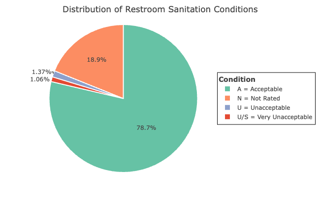
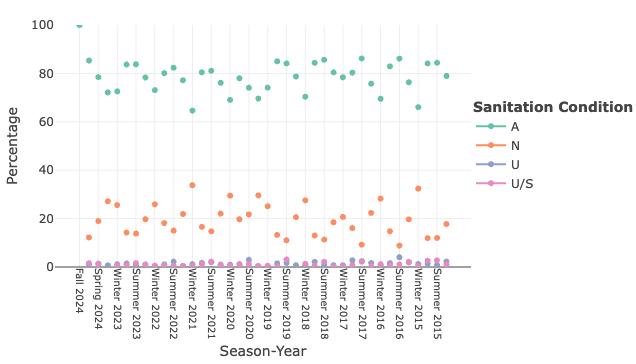

Project Report
Motivation
Public parks play a vital role in urban life, offering spaces for recreation, relaxation, and community engagement. However, their value can be compromised by issues like crime, inadequate cleanliness, and poor sanitation. Our project, Behind the Green: Data Insights Into NYC Parks’ Cleanliness and Safety, aims to analyze key factors affecting park visitors’ experiences, including crime rates, restroom conditions, cleanliness, and syringe litter. By uncovering insights through data analysis, we hope to guide improvements and ensure NYC parks remain safe, clean, and welcoming for all.
Initial Questions
- Crime:
- Cleanliness: What
are the cleanliness ratings by different features? How do cleanliness
ratings vary over different time periods? What is the relationship
between cleanliness and park categories?
- Restroom: What is the
distribution of restroom sanitation conditions in New York City’s public
parks? How do sanitation conditions vary by borough and park type? What
is the trend in restroom sanitation ratings across different seasons and
years (2015-2024)?
- Syringe: How does syringe litter differ between parks? How does utilization of safe disposal kiosks change over time? How does utilization of safe disposal kiosks compare with syringe litter?
Data
Data Source
- Crime:
- Cleanliness: The
Cleanliness data comes from the Parks Inspection Program (PIP), which
evaluates New York City parks through regular inspections. PIP assesses
the cleanliness of parks across 17 features, categorized under
cleanliness, structural, and landscape conditions. Each feature is rated
either as “Acceptable” (A) or “Unacceptable” (U), providing insight into
the cleanliness conditions across different locations and features.
Datasets on properties and cleanliness are maintained in this
part.
- Restroom: Restroom data
is also gathered through PIP and records detailed information about
public restroom inspections in New York City parks. These inspections
rate the restroom facilities for cleanliness and structural quality,
contributing to the overall evaluation of park facilities. This dataset
allows for the analysis of restroom conditions across different parks
and helps to identify potential areas for improvement.
- Syringe: The Syringe dataset records syringe collection in NYC Parks, gathered by NYC Parks staff and various organizations under the Syringe Litter Data Collection initiative. The data highlights syringe disposal patterns and is accessible via NYC OpenData. The syringe collection data provides valuable insights into the safety and public health conditions of NYC Parks and is compiled monthly after thorough quality checks.
Data Cleaning
- Crime:
- Cleanliness:
Initially, multiple datasets were loaded and cleaned to ensure
consistent column names. Relevant cleanliness features, including
Litter, Glass, Graffiti, Weeds, and Ice, were selected for focused
analysis. The datasets were then merged based on
prop_idandinspection_idto create a comprehensive dataset encompassing park information, feature ratings, and cleanliness inspection data. Finally, the combined dataset was further cleaned and standardized by addressing missing values, removing unnecessary columns, and formatting string values to maintain data consistency.
- Restroom: The data
cleaning process involved importing three datasets (toilet_inspection,
parks_inspection, and sites_inspection) and standardizing their column
names using
janitor::clean_names(). The datasets are then merged based on common identifiers (inspection_idandprop_id). New features, such as the year column, are created, and unnecessary columns were removed. Data is filtered to include only public restrooms and relevant columns. Missing values in thepr_littercolumn are removed, and categorical values inseasonandboroare standardized. Finally, the dataset is filtered to include records from 2015 to 2024, ensuring a clean and consistent dataset for analysis.
- Syringe: The dataset on
syringe findings in NYC parks was processed through several key cleaning
steps. First, we standardized the date-time information by converting
the collected_date field to a consistent format and extracting the year
component. We also standardized the month names using the abbreviated
format. Missing values in syringe counts (
ground_syringes,kiosk_syringes,total_syringes) and kiosk_numbers were replaced with zeros to ensure consistent numerical analysis. Duplicate entries were removed using distinct(), and records with invalid location values (where location = “0”) were filtered out. Especially, we updatedkiosk_siteto TRUE wherekiosk_syringes> 0, this ensures locations with recorded kiosk usage are properly flagged.
Exploratory Analysis
1. Cime in NYC Parks
2. Sanitation Conditions of NYC Parks
2.1 Overall Cleanliness
The proportions of three rating types for different features
From the bar chart below, we can observe the proportions of three rating types — Unacceptable (U), Very Unacceptable (U/S), and their combined proportion (U + U/S) — for different features (Glass, Graffiti, Ice, Litter, and Weeds).

- For all features, the proportion of “U/S” is relatively low compared
to the “U” rating, suggesting that while some features may have been
rated very unacceptable, the majority of issues fall into the
unacceptable category without additional safety concerns.
Litter: The feature “Litter” has the highest combined (U + U/S) and individual “U” proportions compared to all other features. This indicates that litter is the most problematic feature in terms of cleanliness, frequently being rated as unacceptable.
Weeds: Weeds have relatively high values for both “U” and “U + U/S” proportions. This suggests that weeds are also a significant cleanliness issue.
Graffiti: Graffiti shows a moderate level of unacceptable ratings (both “U” and “U + U/S”), indicating that it is frequently, but not as consistently as Litter, rated as problematic.
GlassandIce: Both features have relatively low proportions across all rating types, suggesting that these features are generally well-maintained and less frequently rated as unacceptable.
The least error-prone feature in different boroughs

The table shows the feature in each borough with the highest proportion of “A” cleanliness ratings, indicating which features are the least error-prone in terms of cleanliness for each borough. The data includes results for five boroughs: Brooklyn (B), Manhattan (M), Queens (Q), Staten Island (R), and Bronx (X).
Ice is the best-maintained feature in Brooklyn, Manhattan, Queens, and Bronx, with “A” rating proportions ranging from 97.91% to 98.85%. This indicates consistent cleanliness management across these boroughs. In Staten Island, Glass has the highest “A” rating at 98.87%, suggesting a different focus in cleanliness efforts. Overall, Ice appears to be easier to maintain across multiple boroughs, while Glass is notably well-managed in Staten Island.
The cleanliness ratings of NYC and its boroughs during the decade
We calculated and compared the overall “A” rating proportion of cleanliness in each borough and the whole New York City each year, and analyzed the cleanliness trend in different boroughs.

- Overall Trend: The overall Acceptable proportion
for New York City (grey line) shows a steady increase from around 90% in
2015 to 93% by 2018, followed by a significant decline around 2020, with
a slight recovery in 2022.
- Inter-Borough:
Staten IslandandQueensshow significantly higher cleanliness levels compared to other boroughs, whereas theBronxandBrooklyndisplay noticeably lower cleanliness in certain years.
- The
Bronxexhibits large fluctuations in cleanliness, with a sharp decline in 2022 to below 87%, marking it as the borough with the lowest cleanliness proportion.Manhattanshows a steady increase from 92% in 2015, peaking in 2018, with slight fluctuations but maintaining relatively high cleanliness levels.Brooklynsees an improvement after 2017, a notable dip around 2020, and a recovery to above 90% by 2022.
Staten Islandconsistently maintains an Acceptable proportion above 96%, making it the most stable and cleanest borough throughout the period.Queensstarts with a high cleanliness proportion in 2015, rising significantly after 2018 to nearly 97%, and remains one of the leading boroughs despite a slight decline.
- The decline around 2020 could be attributed to pandemic-related resource shortages and increased maintenance challenges.
Analysis of cleanliness and park category
Then, we studied the association between park types and cleanliness and
analyzed which park types were more likely to accumulate litter.
- It can be found that the proportion of “N” ratings is small but
slightly higher in categories like Large Park and Other, suggesting some
missing or incomplete cleanliness data in these types of parks.
- The proportion of “A” ratings is consistently high across all park
categories, almost reaching 100%. This indicates that most parks
received an acceptable cleanliness rating.
- The proportion of “U” ratings is relatively low, with noticeable
increases in the
Large ParkandSmall Parkcategories. Specifically,Large Parkshows a higher percentage of “U” ratings.
- Other categories, such as
Greenstreet,Large Center, andSmall Center, show almost no “U” ratings, with proportions close to 0%.
2.2 Restroom Sanitation
Distribution of Restroom Sanitation Conditions
We analyzed the distribution of restroom sanitation ratings, with categories “Acceptable (A),” “Unacceptable (U),” “Not Rated (N),” and “Very Unacceptable (U/S).”

The majority (78.7%) of restrooms are rated as “Acceptable,” while 18.9% remain “Not Rated.” Only small percentages are classified as “Unacceptable” (1.37%) or “Very Unacceptable” (1.06%).
Restroom Sanitation by Borough and Park Type
Next, we examined how sanitation conditions vary by borough and park type (category).

By borough, the Bronx has the highest percentage of “Acceptable” restrooms (84.3%), followed by Queens (80.8%). Other boroughs report similar low percentages for “Unacceptable” and “Very Unacceptable.” By park type, Restrooms in both large and small parks are mostly rated as “Acceptable” (79.1% and 78.5%, respectively). Small parks have slightly higher “Not Rated” percentages (19.2%) compared to large parks (18%), but “Unacceptable” and “Very Unacceptable” ratings are consistently low across both types.
Trends in Restroom Sanitation Ratings by Season-Year

Seasonal trends show that restroom sanitation is generally better in summer and fall, with “Acceptable” ratings reaching 80%-90%. Winter sees a drop to 75%-80%, possibly due to weather-related maintenance challenges, while spring ratings improve as weather warms.
Visitor Count and Restroom Sanitation
We examined the relationship between restroom sanitation and visitor counts.

Restrooms with higher visitor counts are more likely to have lower ratings, especially “Very Unacceptable” conditions, emphasizing the need for focused maintenance in high-traffic areas.
2.3 Syringe Litter Issue
Top 10 Locations with the Highest Average Annual Increase in Syringe Findings

We found that Aqueduct Walk and St. Mary’s Park show significantly higher rates of increase, with approximately 4,000 and 3,500 additional syringes per year respectively. These two parks require immediate attention to address the growing syringe litter issue.
Total Syringe Distribution

The total syringes distribution shows a heavily skewed distribution, with a significant number of parks having a very low number of syringes, and a small number of parks having a very high number of syringes.
The data provides important insights into the scale and distribution of this public health and safety concern, which can help policymakers and local authorities determine where to focus their efforts and resources to address the problem of improper syringe disposal in NYC’s green spaces.
Seasonal Trends in Syringe Findings

The monthly syringe findings from 2017 to 2024 reveal a clear increasing trend over the years, with 2022 showing the highest peak of nearly 30,000 syringes in July. The data demonstrates consistent seasonal patterns, with higher counts typically occurring during summer months (June-September) and lower counts in winter months. Recent years (2021-2024) show notably higher syringe counts compared to earlier years (2017-2019), suggesting an intensifying challenge in urban park maintenance and public health management.
Syringe Findings by Property Type and Borough

For the boroughs, the graph shows that the Bronx leads with over 200 unique locations, followed by Manhattan with approximately 160 locations, indicating that this issue is more prevalent in these two boroughs compared to others like Brooklyn, Queens, and Staten Island.
For the property types, traditional parks (PARK) dominate with approximately 400 unique locations, while other property types - Greenstreets (GREENST), Playgrounds (PLGD), and Zones (ZONE) - each report far fewer locations, around 40-50 sites each. This pattern suggests that syringe-related issues are predominantly concentrated in standard park areas rather than specialized recreational spaces.
Kiosk Utilization over Time

The kiosk utilization rate demonstrates a pronounced downward trend from 2018 to 2024. During the early period (2017-2020), utilization fluctuated considerably between 40-70%, with peak rates reaching around 70%. A significant decline occurred post-2021, with rates steadily dropping to approximately 10-15% by 2024. This substantial decrease suggests a concerning trend in the effectiveness or acceptance of the kiosk disposal program over time, particularly in recent years.
Ground Findings vs. Kiosk Findings over Time

This plot compares ground-found and kiosk-collected syringes from 2017 to 2024, revealing a stark contrast between collection methods. Ground syringes (shown in blue) demonstrate high variability and an overall increasing trend, with peaks reaching over 25,000 in 2022. In contrast, kiosk collections (shown in green) remain consistently lower, rarely exceeding 5,000 syringes, and show a declining trend toward zero by 2024. This disparity suggests that despite the implementation of kiosk disposal programs, ground collection remains the predominant method of syringe recovery in NYC parks.
Discussion
The analysis of NYC parks reveals several critical insights.
For Crime in NYC parks,
Regarding Cleanliness, certain features, seasons, and boroughs were identified as factors that influence cleanliness levels. Features such as graffiti and litter consistently showed lower cleanliness scores, with cleanliness ratings varying seasonally, generally better in winter. Borough-level differences indicate the need for targeted interventions in areas lagging behind. These results align with our expectations and emphasize the importance of feature-specific solutions and seasonal adjustments.
For Restroom conditions, the findings show a disparity across boroughs, with Brooklyn and Manhattan often reporting higher rates of unacceptable conditions. The data also suggest that higher visitor counts, particularly during spring and summer, lead to a decline in sanitation. Although many restrooms maintain acceptable conditions, a notable number still fall under “Unacceptable” or “Very Unacceptable” categories, highlighting areas that require improvement.
In terms of Syringe litter, the analysis points out that traditional parks are the primary locations for syringe findings, significantly outnumbering other property types like Greenstreets and Playgrounds. The Bronx and Manhattan have the highest number of affected locations, and the peak findings during summer suggest seasonal trends that need attention. Regression analysis reveals the need for revising harm reduction strategies, focusing on more effective interventions in high-risk areas, particularly given the reduced utilization of kiosks and increasing ground findings. Addressing these issues requires further research into environmental factors and targeted policy adjustments.